ST Gallery WP
Documentation
- created: 09/22/2014
- by: beautiful-templates
- email: beautifultemplates@gmail.com
This documentation file helps you to understand whole plugin concept and how it works. You should read all sections of the file before start your work. After that you still can't find the solution yet, please leave a ticket on Support system then support agents help your issue.
Install & Update
1: Installing
If you do not have ST Gallery WP on your computer, you can download it here ↓
- Step 1: Upload the entire st-gallery-wp folder to the /wp-content/plugins/ directory.
- Step 2: Activate the plugin through the 'Plugins' menu in WordPress.
You will find 'ST Gallery WP' menu in your WordPress admin panel.
2: Update
If you have ST Gallery WP installed, check for updates and download latest version ↓
- Step 1: Reupload the entire st-gallery-wp folder to the /wp-content/plugins/ directory. (override folder st-gallery-wp)
- Step 2: Activate the plugin through the 'Plugins' menu in WordPress.
You will find 'ST Gallery WP' menu in your WordPress admin panel.
3: User interface
This is the user interface after successfully installing the plugin. let's find out through the menus:
- ST WP Gallery → All Gallery: Displays a list of the gallery.
- ST WP Gallery → Add New: Add new gallery.
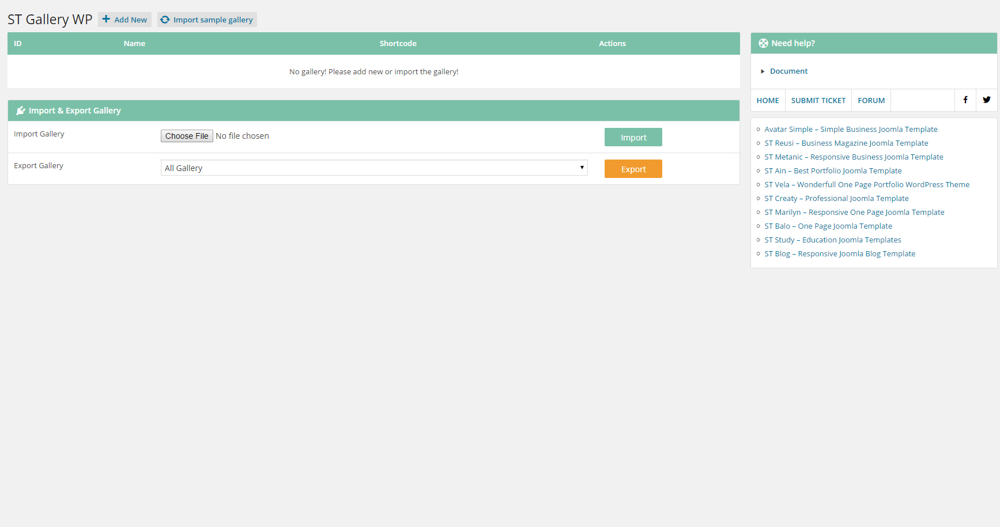
Add / Edit / Delete Gallery
In this section I will show you how to create, edit and delete gallery. please follow me:
1: Add New Gallery
- Step 1: Click on ST Gallery WP → Add New menu in your WordPress admin panel or ST Gallery WP → All Gallery and click on Add New button
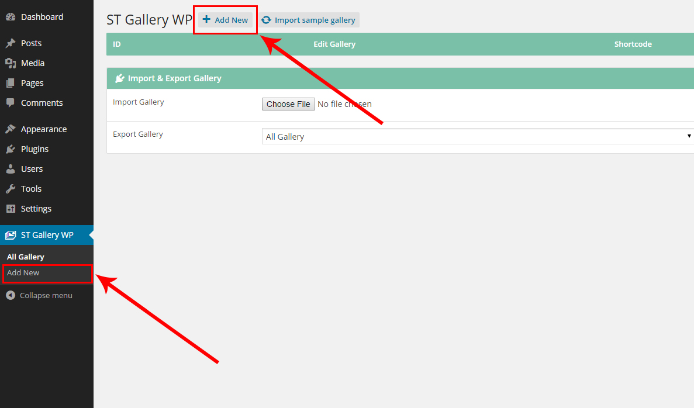
- Step 2: Enter name gallery and click on Submit button
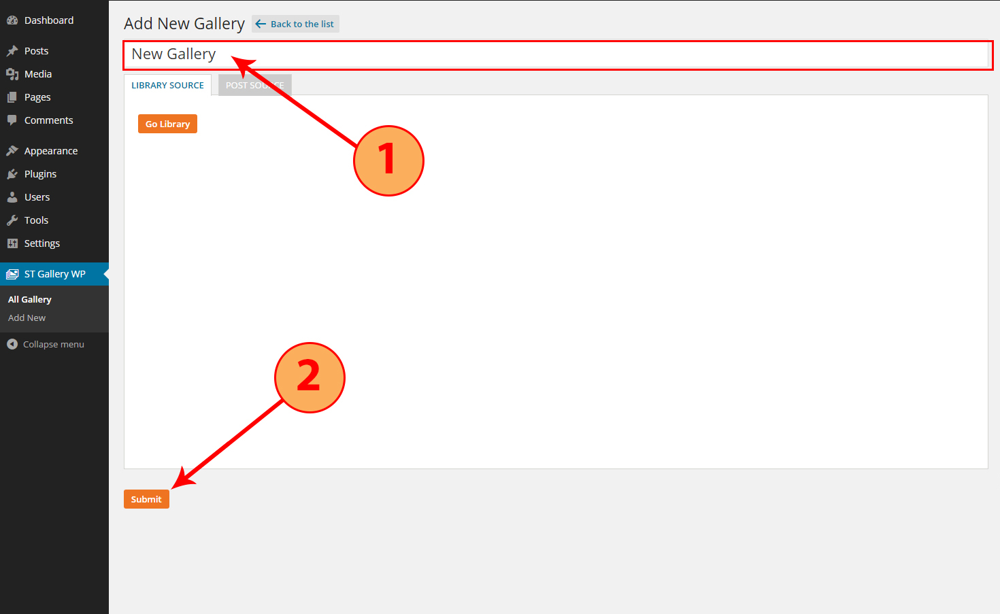
2: Edit Gallery
- Step 1: Click on ST Gallery WP → All Gallery menu in your WordPress admin panel. Click on gallery name or "Edit" button to edit the gallery.
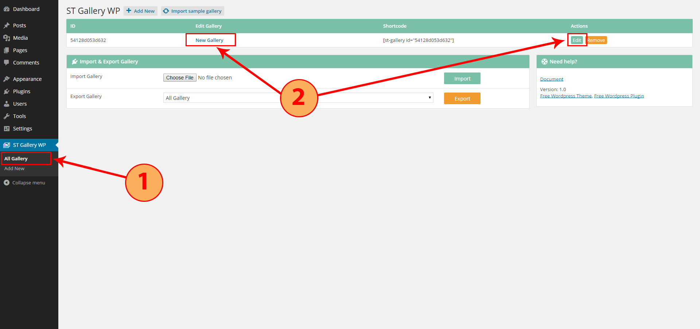
- Step 2: You can edit anything and finally click on "Save Changes" to finish.
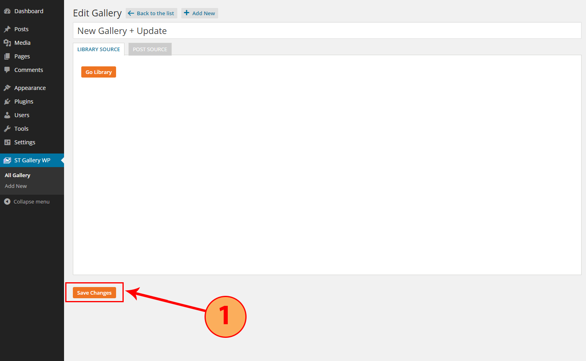
3: Delete Gallery
- Click on ST Gallery WP → All Gallery menu in your WordPress admin panel. Click on "Remove" button to delete the gallery.
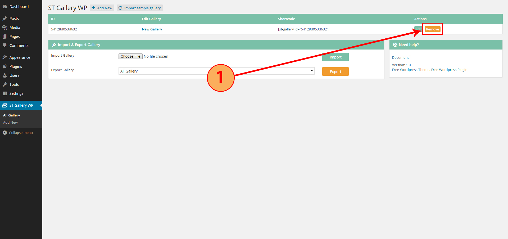
Add / Edit / Delete Images
In this section I will show you how to add , edit and delete images in gallery. please follow me:
1: Add Images
You can add images from Library, Posts and using image URL
- Library Source: Using images from library or using image URL
- Post Source: Using featured image in posts
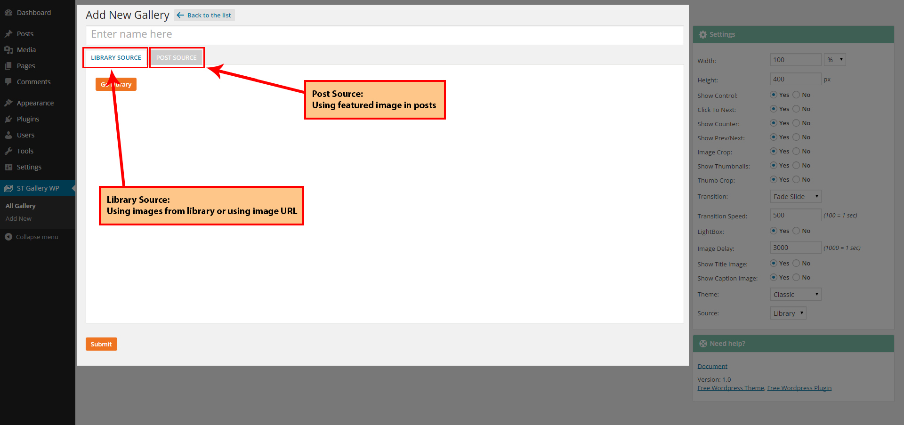
-
1-1: Add Images using Library Source:
Step 1: Click on tabs "LIBRARY SOURCE" and click on "Library" button
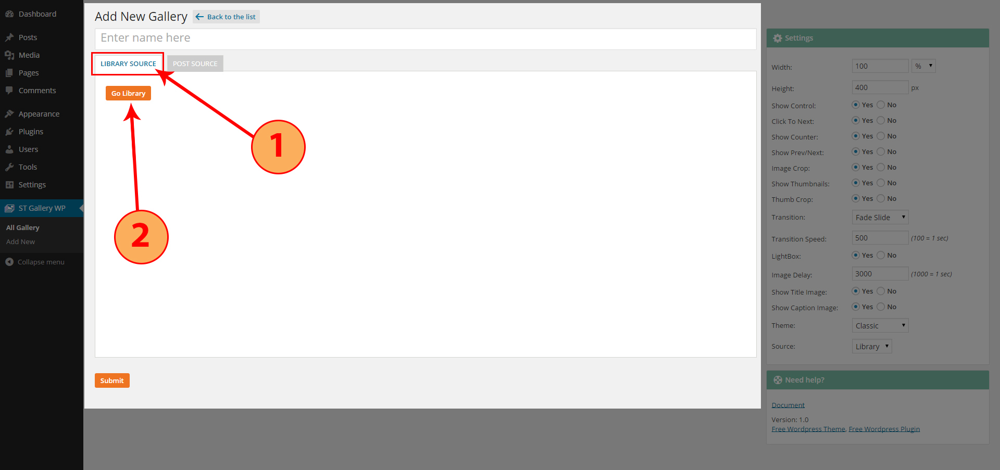
Step 2-1: Select the image and use the keys (Ctrl + click on the image) to select multiple images, click on "Select" to finish.
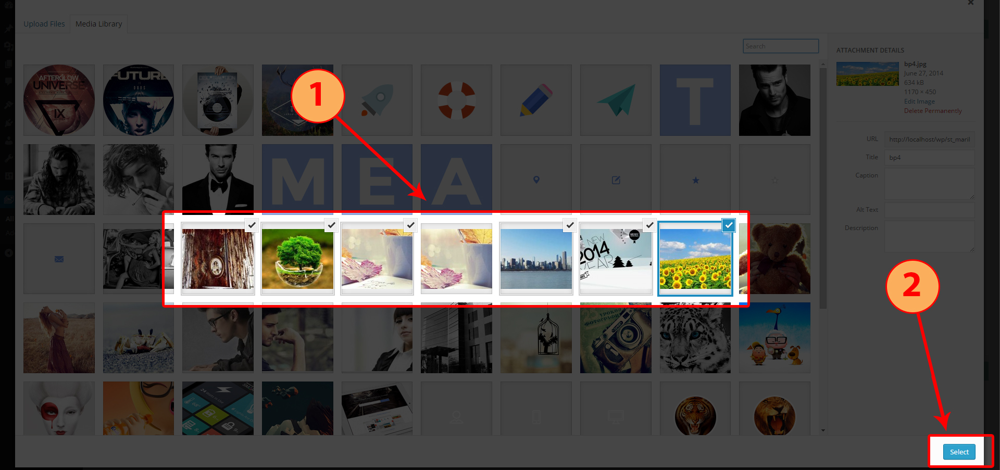
Step 2-2: If you want to upload photos from your computer, then click on the tab "Upload Files" and then click next to "Select Files" and select the image to upload
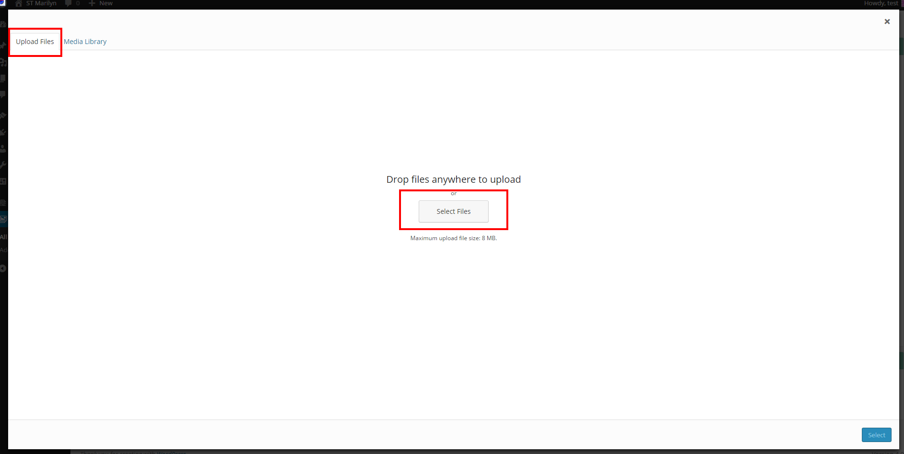
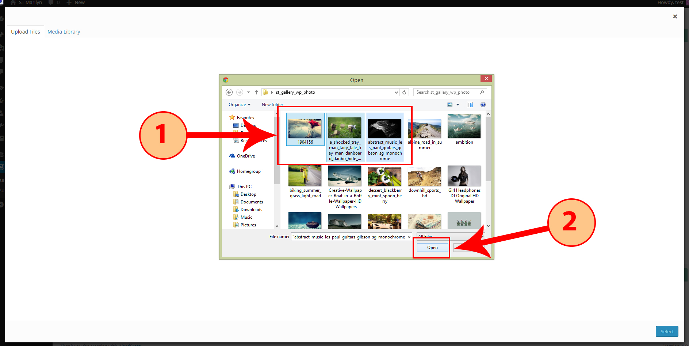
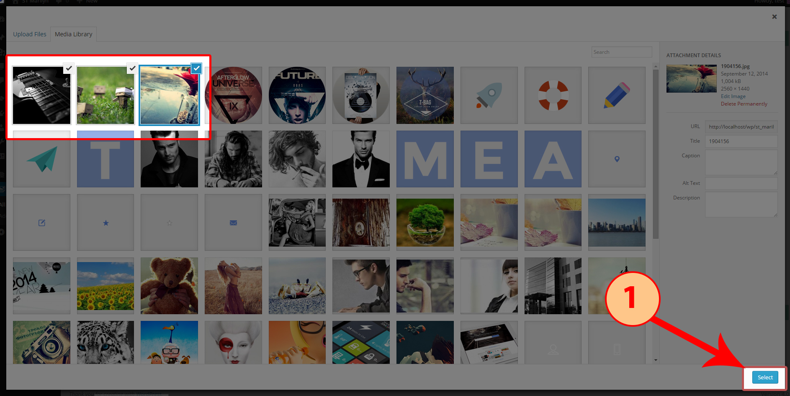

1-2: Add Images using Post Source:
- Step 1: Click on tabs "POST SOURCE"
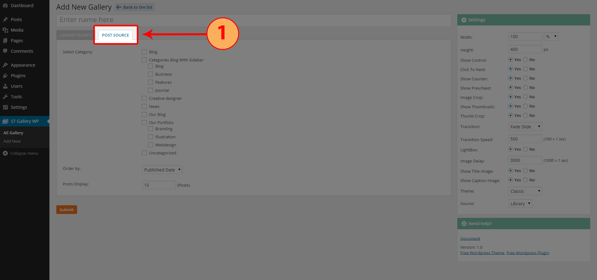
- Step 2: Select the "Category", select the "Order by", enter "Posts Display" and in Settings box find Source select "Post"
- Select Category: Using featured image of posts in the category selected.
- Order by: Sort the images in gallery.
- Post Display: The number of images in gallery
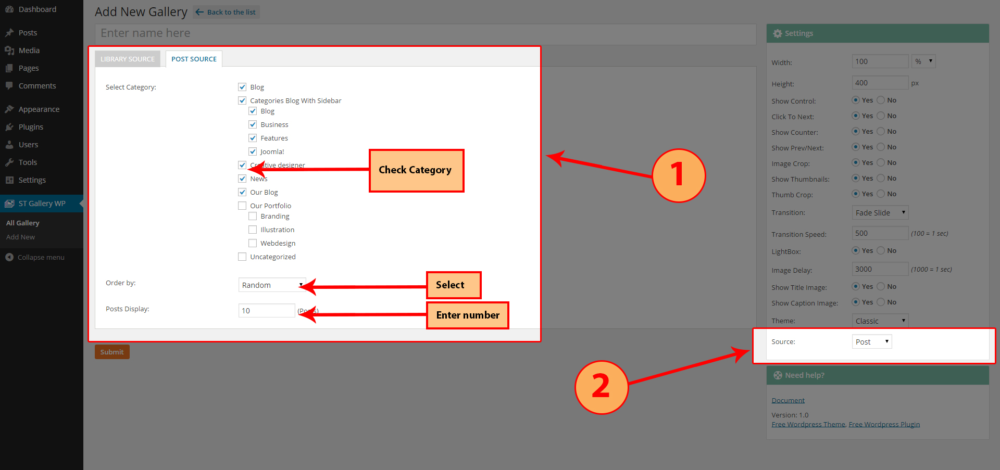
1-3: Add Images using Images URL:
- Step 1: Add any image in your photo library. (follow 1-1: Add Images using Library Source)
- Step 2: Click on "Edit" button and insert images URL to "Image URL" box. Click on "Submit" button (or "Save Changes" button if edit gallery) to finish
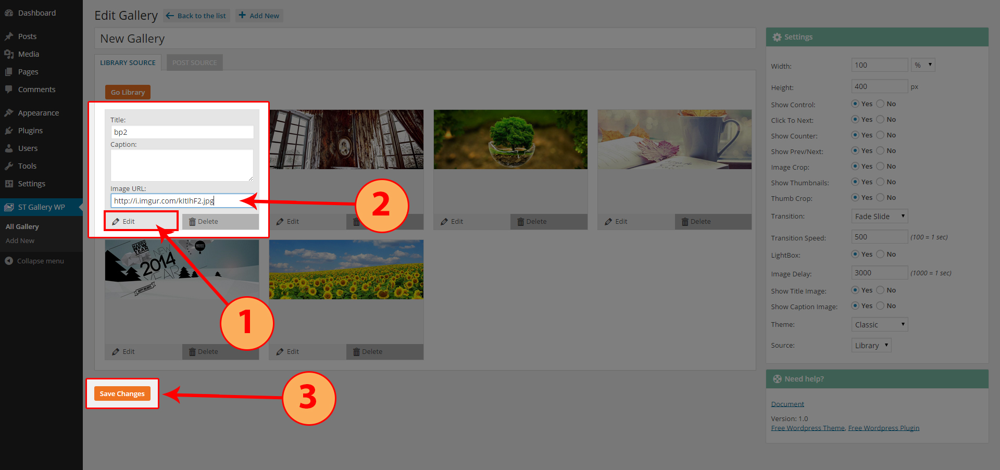
2: Edit Images
- Click on "Edit" button to edit information of images, you can edit the title, caption and image url. click on "Save Changes" (or "Submit") button to save
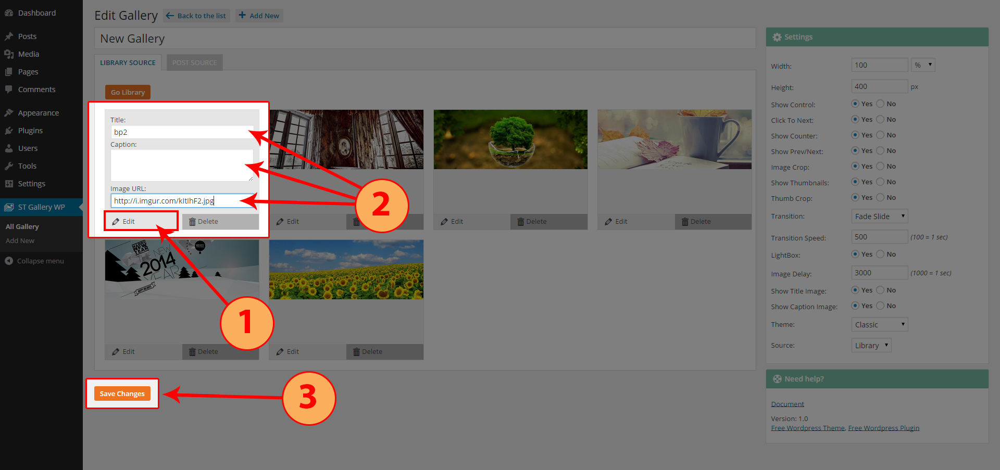
3: Delete Images
- -Click on "Delete" button to delete images. click on "Save Changes" (or "Submit") button to save.
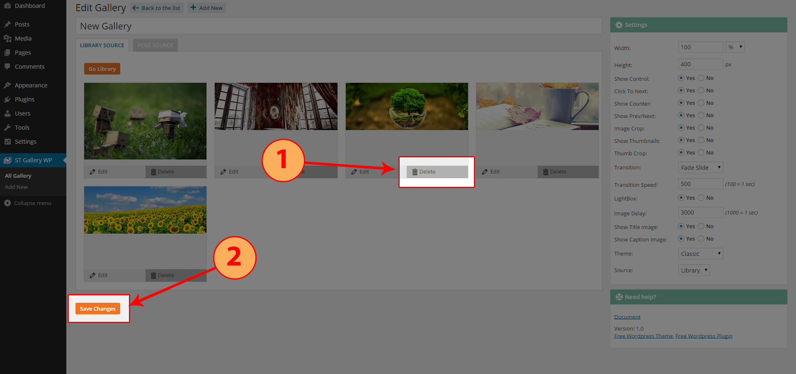
Gallery Settings
In this section, I will description in detail the function of each element in the "Settings"
1: Simple Settings
- Width: Manually set a gallery width.
- Height: Manually set a gallery height.
- Source: Sets image source for gallery.
- Choose Type: Sets type for gallery.
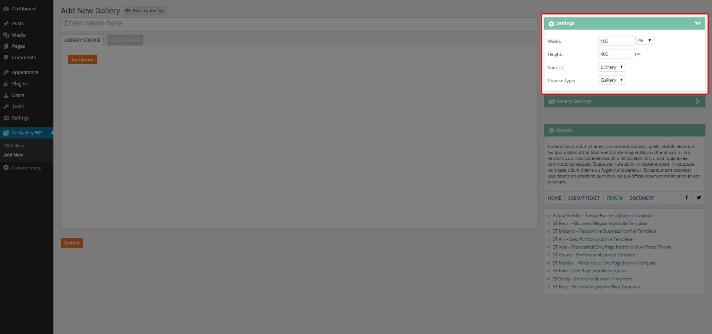
2: Gallery Settings
- Show Control: Show control in gallery.
- Click To Next: Helper for adding a click event on the entire stage to move forward.
- Show Counter: Toggles the counter.
- Show Prev/Next: Toggles the image navigation arrows.
- Image Crop: Defines gallery will crop the image.
- Image Pan: Toggles the image pan effect..
- Show Thumbnails: Toggles the thumbnail.
- Thumb Crop: Defines gallery will crop the thumbnail.
- Transition: Defines what transition to use.
- Transition Speed: Defines the speed of the transition.
- LightBox: Helper for attaching a lightbox (to zoom in) when the user clicks on an image, disabled if you enable "Click To Next"
- Image Delay: Image delay time, Enter 0 to disable autoplay gallery.
- Show Title Image: Toggles the title.
- Show Caption Image: Toggles the caption.
- Theme: Sets theme for gallery.
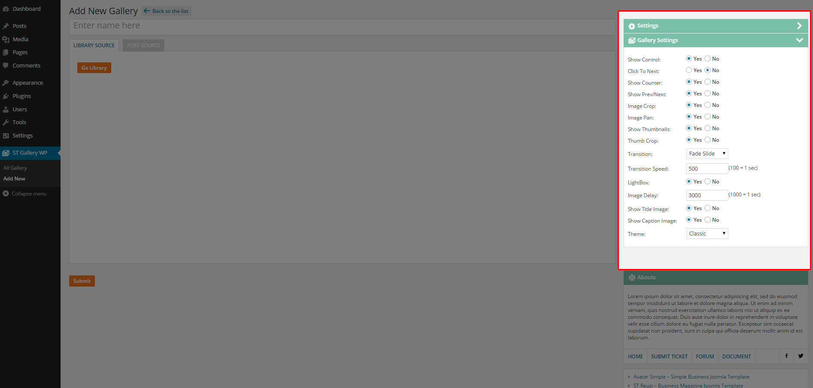
2: Skitter Settings
- Auto Play: Sets whether the slideshow will start automatically.
- Stop Over: Stop animation to move mouse over it.
- Interval: Interval between transitions.
- Show Randomly: Randomly sliders.
- Show control: Option play/pause manually.
- Control Position: Position of button controls.
- Progress Bar: Displays progress bar.
- Show Title: Title display.
- Title Animation: Title animation type.
- Navigation Style: Defines navigation style.
- Navigation Position: Position of navigation
- Preview: Preview thumbnail of hover on dots navigation.
- Show Next/Prev: Show Next/Previous button.
- Navigation Keys: Using key left-right to next/previous sliders .
- Auto hide: Auto hide the buttons, controls, navigations.
- Focus Slideshow: Focus slideshow.
- Focus Position: Position of button focus slideshow.
- Fullscreen: Fullscreen mode.
- Animation: Default animation of slideshow.
- Theme: Sets theme for slideshow.
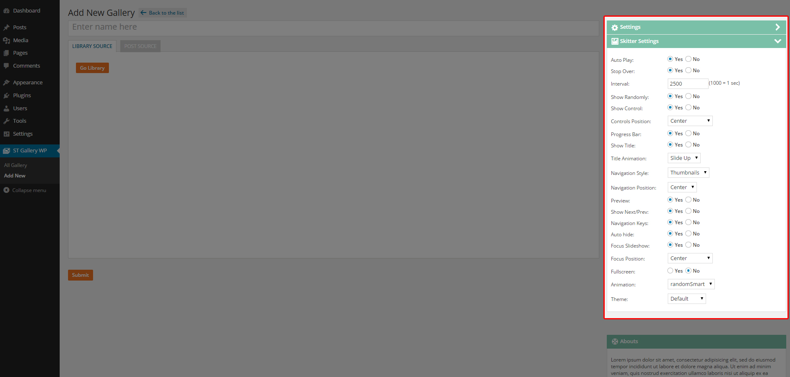
Import & Export Gallery
1: Import Gallery
- Click on "Choose File" button, select your previously exported gallery file and click "Import" button to finish.
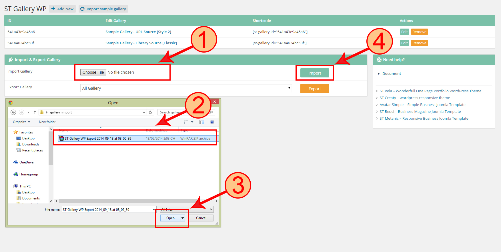
2: Import Sample Gallery
- Click on "Import sample gallery" button to import the gallery demo.
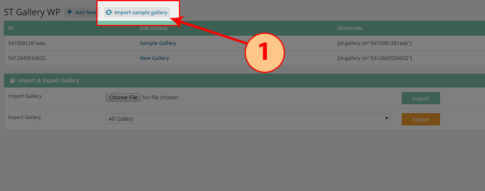
3: Export Gallery
- Click select gallery (All Gallery or 1 gallery) . Click to "Export" button and save file in your computer.
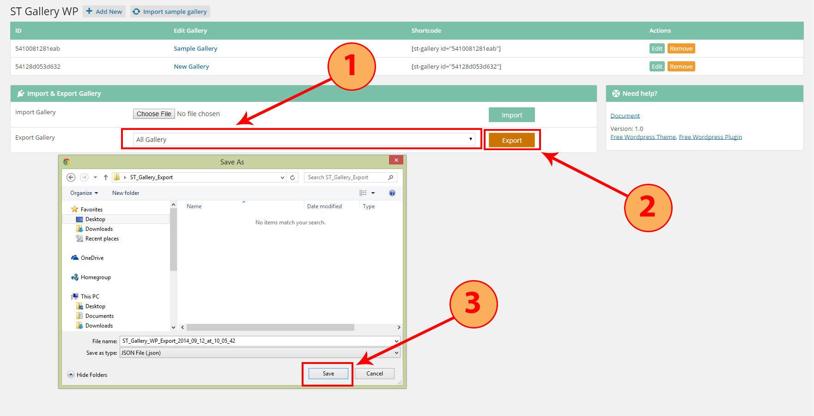
Questions & Answers
Questions 1: How to insert gallery to post, page?
- Step 1: In post/page editor you click to button gallery
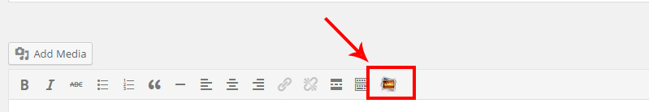
- Step 2: Select the gallery and click to "OK"
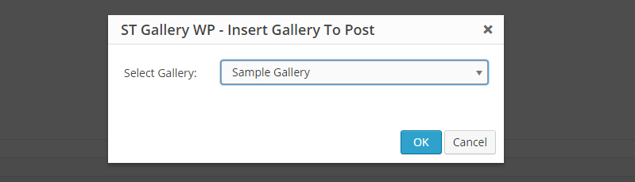
Questions 2: How to insert gallery to widget?
- Click on ST Gallery WP → All Gallery menu in your WordPress admin panel. copy the shortcode and paste to widgets
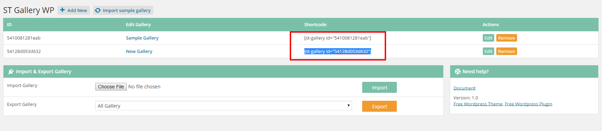
Support
- Submit ticket: http://beautiful-templates.com/amember
- Forum: http://beautiful-templates.com/evo/forum